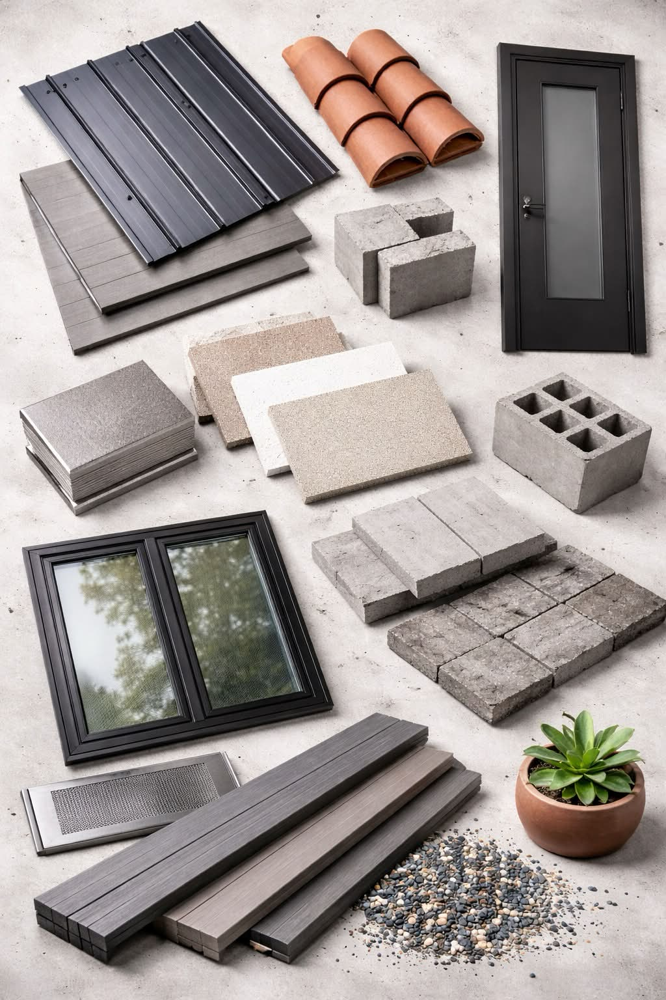

3D Story Viewer
Interactive 3D visualization from Cesium ion. Use mouse/touch to navigate the scene.
Navigation tips:
- Left click + drag to rotate the view
- Right click + drag to zoom in/out
- Middle click + drag to pan
- Use touch gestures on mobile devices
Home-Hardening & Safety Tools
Home-Hardening Checklist
Wildfire Risk Snapshot
- Summer highs: 95–110°F
- Ember exposure: Moderate–High
- Slope risk: High (foothill interface)
- Wind drivers: Santa Ana winds
- Historic fire days/year: 12–30
Safety Score Meter
0% complete
Permit & Policy Shortcuts
- Use expedited permitting pathways for projects meeting resilience standards (pp. 18–19, 26–27).
- Bundle rainwater/greywater and PV+storage in one submission; request fee waivers for survivors.
- Coordinate early with mutual water companies for tank tie-ins and hydrant accessibility.
Tank Sizing Estimator
Calculate recommended water tank capacity for rainwater harvesting, firefighting, and domestic use.
Rule of thumb: gallons harvested ≈ roofArea × rainIn × 0.623 × efficiency. Add fire + domestic reserves.
Fire-Resistant Building Materials
Walls / Structural Materials
- Fiber cement siding panels
- Stucco / cement finish boards
- Concrete blocks (CMU)
- Solid concrete masonry units
Roofing Materials
- Standing seam metal roofing panels
- Clay roof tiles (terracotta)
Windows / Openings
- Dual-pane tempered glass windows
- Aluminum / metal window frames
Doors
- Steel exterior doors (fire-rated)
Exterior Surfaces / Decking
- Fire-resistant composite decking boards
Paving / Hardscape
- Concrete pavers
- Stone pavers
Ventilation Protection
- Ember-resistant vent screens / metal vent covers
Defensive Landscaping
- Gravel / decorative stone
- Fire-resistant plants (succulents)

ADU Explorer: Sustainable Rebuilding Options
Explore fire-resilient, water-smart, and equitable accessory dwelling unit (ADU) models suitable for your recovery plan.
Upload a Photo of Your House / ADU
Upload an exterior photo of your home or ADU. This helps visually compare your structure with wildfire-safe guidelines.
Preview
House / ADU Wildfire Safety Tester
Answer these quick questions about your house or ADU. You’ll get a 1–10 wildfire safety rating (1 = less safe, 10 = safest) and an informal “approval” style status. This is a heuristic tool only; always confirm with local codes.
This tool gives an approximate rating only and does not replace a WUI code review, local fire department inspection, or guidance from a wildfire specialist.
Wildfire Events
Enter an area and time window. Results will appear below and on the map.
California Wildfire Trends
| # | Date | Title | Latitude | Longitude | Status | Sources |
|---|
Map: Recovery Hubs & Wildfire Events
Starter map centered on Altadena. Replace placeholder points with exact coordinates as needed.